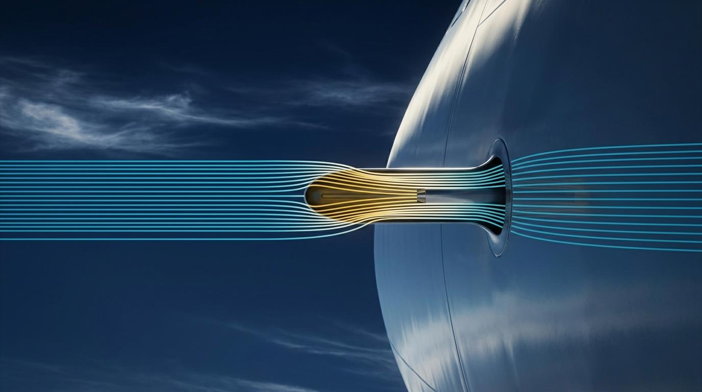

Everything the flight computer does with a rate — and why you still have to understand the arithmetic the box is hiding from you.
This module covers the Navigation Computer — Chapters 5 to 9 of the General Navigation syllabus. Earlier chapters, covering maps, projections and the basics of position and direction, sit elsewhere in the Ghost Aviator library. The numbering follows the DGCA syllabus, which is why this module opens at Chapter 5.
Every technique here is taught on the ASA CX-3 flight computer and, where the CX-3 has no function, on a scientific calculator. Both are permitted in the DGCA examination. The old circular slide rule — the plastic disc with the rotating wind face — is not taught. The physics it computed has not changed, and that is what you are here to learn.
You are 40 minutes into a night sector, cruising at 320 knots ground speed. ATC asks you to confirm your estimate for a reporting point 18 nautical miles ahead. You reach for the CX-3, type quickly, and the screen returns 3.5.
Three and a half what? If you read that as 3.5 minutes you are right. If you read it as 3.5 hours, you have just told a controller you will arrive at a point you will actually pass in three minutes — and the next aircraft is being sequenced on your number.
The box did the arithmetic perfectly. The box cannot tell you whether the answer is sensible. That job never left the flight deck. This chapter is about doing it well.
Almost every problem in this chapter is the same problem wearing different clothes. Something happens at a steady rate, and you want to know how much of it happens in a given time.
A rate is simply a quantity per unit of time. Feet per minute. Nautical miles per hour. Kilograms per hour. Litres per hour. Once you see that they are all the same shape, the whole chapter collapses into one idea:
Take a rate of climb of 700 feet per minute. In 2 minutes you gain 1,400 feet. In 3 minutes, 2,100 feet. In 4 minutes, 2,800 feet. You are not doing a new calculation each time — you are reading off the same fixed proportion. That proportion is the rate.
Here is where students lose marks, and it has nothing to do with which computer you own. Rates in aviation are quoted in two different time units, and they are mixed freely:
A fuel flow of 2,000 kg per hour is the same thing as 33.33 kg per minute. Same rate, different clothes. On the old disc there were two separate index marks to handle this, and choosing the wrong one was a classic way to be out by a factor of sixty.
The CX-3 removes the choice. Every duration field is a real duration — you
enter 1:37:00 and the machine knows that is one hour and
thirty-seven minutes. There is no index to select and no factor of sixty to get
wrong.
But you still have to know roughly what the answer should be, because the CX-3 will just as happily return a wrong answer from a wrong input. The disc at least made you look at the arithmetic. The box does not.
When a question gives you a rate in one time unit and asks for an answer in another, it is not testing your typing. It is testing whether you noticed. Read the units in the question and the units in the answer options before you touch the keypad.
Three quantities, one relationship. Know any two and the third is fixed.
Note the words ground speed. Not airspeed. Distance over the ground is covered at the speed you are actually moving over the ground, and the wind is what makes those two different. That is Chapter 7's problem. For now, every speed in this chapter is a ground speed.
| Fields | Dist · Dur · GS |
|---|---|
| How it works | Enter any two, the third is calculated. |
| Duration format | Press CONV UNIT on Dur to switch
between HMS, HR, MIN and SEC.
Use the : key to separate hours, minutes and seconds. |
Verified against the CX-3 User's Guide V1.3, page 10: 5 NM flown in 00:02:32 returns 118.42 KTS GS.
Problem. How far do you travel in 48 minutes at a ground speed of 120 knots?
Dist = GS × (min ÷ 60) = 120 × (48 ÷ 60) = 96.00 NM
GS. Press 120 and tap enter.Dur. Press CONV UNIT until MIN is displayed.Dist reads 96.00 NM
Sanity check. 48 minutes is a bit over three quarters of an hour. Three quarters of 120 is 90. The answer should be somewhere near 90–100, and 96 is. If the screen had said 9.6 or 960 you would have caught it here.
Problem. You have covered 90 NM over the ground in 30 minutes. What is your ground speed?
GS = (Dist ÷ min) × 60 = (90 ÷ 30) × 60 = 180.00 kt
Dist: 90, enter.Dur: switch to MIN, press 30, enter.GS reads 180.00 KTS
Sanity check. 30 minutes is half an hour, so the hourly figure is double the half-hourly one: 90 × 2 = 180. Exactly right.
On the old disc this example returned a bare 18, and you had to decide for yourself whether it meant 18, 180 or 1,800 knots. At 18 knots you would fall out of the sky. At 1,800 knots you would pull the wings off. Only 180 is a real aeroplane.
The CX-3 gives you the decimal point, so this specific trap is gone. The habit must not go with it. A mistyped digit, a duration entered as hours when you meant minutes, a distance in kilometres when the field wanted nautical miles — every one of those produces a confident, precise, wrong number. The only thing standing between that number and your flight plan is you asking "is that sensible?"
Problem. Your ground speed is 220 knots and you have 57 NM to run. How long will it take?
min = (Dist ÷ GS) × 60 = (57 ÷ 220) × 60 = 15.55 min
GS: 220, enter.Dist: 57, enter.Dur. Press CONV UNIT on it to see the answer as MIN.Dur reads 15.5 MIN (00:15:33 in HMS)
Sanity check. 57 NM is roughly a quarter of 220. A quarter of an hour is 15 minutes. The answer must be near 15, and it is.
An answer of 142.6 minutes is correct but useless on a flight plan. Nobody files an estimate in decimal minutes. You need 2 hours 22.6 minutes.
The old disc carried an entire dedicated ring — the yellow scale — whose only job in life was converting minutes into hours and minutes. That is all it did. On the CX-3 it is a keypress.
| The : key | Separates hours from minutes and minutes
from seconds on input. 2 hours, 38 minutes, 45 seconds is entered as
2:38:45
and displays as 02:38:45. |
|---|---|
CONV UNIT on a Dur field | Cycles the display
between HMS, HR, MIN and SEC.
Use it to read an answer in whichever form the question wants. |
Verified against the User's Guide V1.3,
page 7: 75 minutes converted on a Dur field returns
1.25 HR.
Enter durations in HMS whenever the question gives you hours and
minutes. Do not convert 1 h 37 min to 97 minutes in your head first — that is an
extra opportunity to make an error, and the machine does not need you to. Type
1:37:00
and move on.
Your aircraft measures outside air temperature with a probe stuck into a 320-knot airflow. That air does not arrive at the probe gently. It is brought violently to a stop, and stopping air heats it.
Static Air Temperature (SAT) — the true temperature of the air the aircraft is flying through, with no error introduced by the act of measuring it. Sometimes called OAT. This is the temperature every performance calculation needs: TAS from CAS and pressure altitude, TAS from Mach number, density altitude, all of it.
Total Air Temperature (TAT) — what the probe actually reads. It includes the heating caused by bringing the airflow to rest, so it is always higher than SAT.
The difference between them is the ram rise.
A rough approximation, useful for a mental check:

The disc carried a blue scale for reading ram rise. It is gone. The CX-3 handles the SAT↔TAT relationship inside the Airspeed function, in both directions.
| Planned TAS | You give it OAT → it returns TAT
(among others). Use this on the ground, planning. |
|---|---|
| Actual TAS | You give it TAT → it returns OAT.
Use this in flight, where the probe reading is what you have. |
The K factor | Lives in SET → Aircraft Profile. The Guide calls it "the instrument calibration factor of the airplane... used to calculate OAT from TAT (and vice-versa)". Default 1.0. |
Verified against the User's Guide V1.3, pages 5 and 9.
TAS 400 knots, probe reading (TAT) −22°C. Ram rise is roughly (400÷100)² = 16, call it 17°C on the computer. So the real air temperature is 17°C colder than the probe says: −22 − 17 = −39°C SAT.
Direction check: SAT is always the colder of the two. If your SAT came out warmer than your TAT, you added when you should have subtracted.
Fuel problems are distance-speed-time problems with the words changed. A fuel flow is a rate. A quantity of fuel is a "distance". The arithmetic is identical.
| Fuel Burn | Dur + Rate → Vol |
|---|---|
| Fuel Rate | Wt + Dur → Rate |
| Endurance | Vol + Rate → Dur |
Fuel is quoted sometimes by volume (litres, gallons) and sometimes by mass
(kilograms, pounds). The Fuel function carries both a
Vol field and a Wt field, and the Rate
field follows whichever you use — LPH and GPH for
volume, LBS/HR and KG/HR for mass.
So a question in kilograms per hour needs no conversion and no workaround.
Use the Wt field.
Verified against the User's Guide V1.3, page 10: 1:14:38 at 9.5 U.S. GPH returns 11.82 U.S. GAL; 9,500 LBS burned in 2:30 returns 3,800 LBS/HR; 38 U.S. GAL at 9.5 U.S. GPH returns 3:59:59 endurance.
Problem. Fuel consumption 2,300 kg/hour. Time to destination 1 hour 37 minutes. How much fuel will you use?
Fuel = Rate × hours = 2300 × (97 ÷ 60) = 3,718.3 kg
Dur, press CONV UNIT to get HMS.Rate, set units to KG/HR, press 2300, enter.Wt reads 3,718.3 kg
Sanity check. 1 h 37 is a bit over one and a half hours. One and a half times 2,300 is 3,450. A little more than that is expected, and 3,718 fits.
Older textbooks give this answer as 3,720 kg, read off a plastic disc. The exact figure is 3,718.33. The disc was being read by eye to three significant figures, which is about as well as it could be read.
This is worth noticing now, because you will meet it repeatedly in this chapter and the next four. Where an exact calculation and an old source key disagree by a fraction of a percent, the calculation is right.
Problem. Fuel flow 130 imperial gallons per hour. You have 380 gallons above reserves. What is your safe endurance?
hours = Vol ÷ Rate = 380 ÷ 130 = 2.923 h = 2 h 55.4 min
Vol: set units to imperial gallons, press 380, enter.Rate: press 130, enter.Dur.Dur reads 02:55:23 (175.4 minutes)
Sanity check. 380 ÷ 130 is just under 3. Just under 3 hours. Correct.
Notice the words "above your reserves". Safe endurance is the flying time available from the fuel you are allowed to burn — not the fuel in the tanks. Reserves are not yours to plan with.
An examiner who gives you total fuel and a reserve figure in the same question is checking whether you subtracted before you divided. A pilot who forgets it lands with less than legal minima, or does not land at all.
Problem. You have used 3,700 litres in the last 1 hour 45 minutes. What is your fuel consumption rate?
Rate = Vol ÷ hours = 3700 ÷ 1.75 = 2,114.3 L/h
Vol: set to litres, press 3700, enter.Dur: HMS, press 1:45:00, enter.Rate reads 2,114.3 litres/hour
Sanity check. 1 h 45 is 1.75 hours. 3,700 ÷ 1.75 is a bit over 2,000. Correct.
At least one widely-used textbook works this exact example and prints the answer as 2,110 kg/hour. The question was asked in litres. Litres in, litres out — the answer is 2,114.3 litres per hour, and calling it kilograms silently assumes the fuel has a specific gravity of exactly 1.00, which no aviation fuel does.
Read the units. Then read them again in the answer options.
Three units of distance are in daily use, and you will meet all three.
| Unit | What it is | Where you meet it |
|---|---|---|
| Nautical mile (NM) | One minute of latitude. 1,852 metres exactly. | Aviation and marine navigation. Your default. |
| Statute mile (SM) | 1,609.344 metres exactly. | Visibility reports in some states, US road distances. |
| Kilometre (km) | 1,000 metres. | Visibility, cloud base in metric states, most charts outside the US. |
Equator to pole is 90 degrees of latitude, which is 90 × 60 = 5,400 nautical miles. That same distance is very close to 10,000 km — which is how the metre was originally defined.
So 10,000 km ≈ 5,400 NM, and therefore 10 km ≈ 5.4 NM. That single pair will get you an order of magnitude on any distance conversion in the exam, with no calculator at all.
Dist field → press CONV UNITTapping CONV UNIT cycles the value through
NM, KM, SM, FT and
M. The number converts as the label changes — you do not re-enter
anything.
Verified against the User's Guide V1.3, page 7: 100 KM converts to 54 NM.
Worked example 7. Convert 148 kilometres to nautical miles and statute miles.
Dist field. Press CONV UNIT until KM shows.NM — read 79.9 NM.SM — read 92.0 SM.Sanity check. 148 km is about 15 lots of 10 km, and 10 km is 5.4 NM. 15 × 5.4 = 81. Close to 79.9. Good.
Older question sets sometimes ask for yards. The Guide names the distance
units the converter carries, and “yard” does not appear
anywhere in it. Step through your own Dist unit list once,
at home, so you know for certain — but do not spend exam seconds looking.
A missing unit is not a reason to skip the topic; it is a reason to use the
other instrument.
A yard is exactly three feet, so convert to feet on the CX-3 and divide by three on the calculator.
Worked example 7b. Convert 256 metres to feet and to yards.
256 × 3.28084 = 839.9 ft · 839.9 ÷ 3 = 280.0 yd
Dist field set to M, enter
256.FT — 839.9 FT.Sanity check. A yard is a little short of a metre, so the yard figure must be slightly larger than the metre figure. 280 > 256. Correct.
There are about 4½ litres to an imperial gallon, and 5 imperial gallons make about 6 US gallons. The imperial gallon is the bigger one — which is why the same fuel load is a larger number of US gallons.
Vol field → press CONV UNITWorked example 8. Convert 136 litres to imperial and US gallons.
Vol field, set units to litres and enter 136.Sanity check. 136 ÷ 4.5 is about 30 imperial gallons. US gallons are smaller so the number must be bigger: about 36. Both fit.
Fuel is loaded by volume — the bowser meter counts litres or gallons. The aeroplane cares about mass, because mass is what the wings must lift and what the tanks' structure must carry.
Specific gravity (SG), also called relative density, is simply how heavy a liquid is compared with water. And the whole topic collapses onto one fact:
If a fuel has an SG of 0.80, one litre of it weighs 0.80 kg. That is the entire idea. Aviation fuels run roughly 0.72 to 0.84, so they are all lighter than water — which gives you a permanent sanity check.
The energy in fuel — what actually turns into thrust and range — is tied to its mass, not its volume. Fill with a lower-SG fuel and you need a greater volume to carry the same energy.
200 litres at SG 0.80 is 160 kg. To carry that same 160 kg at SG 0.75 you would need about 213 litres. Same energy, more tank space. On a volume-limited aircraft that is a real payload problem, not a bookkeeping one.
The CX-3's unit conversion will happily convert volume to volume, and weight to weight. It will not convert volume to weight at an arbitrary SG.
The only fuel densities the machine knows are three fixed standards buried in the Weight & Balance section — AvGas 6 lb/gal, Jet fuel 6.84 lb/gal, oil 7.5 lb/gal. The exam will hand you SG values of .72, .78, .80, .81, .84. None of those are in the machine.
You will do this one on the scientific calculator. That is not a workaround — it is the correct professional method.
Wt field.Going backwards — from a weight to a volume — is the same three steps in reverse: get to kilograms, divide by SG to get litres, convert to the volume unit required.
Worked example 9. Convert 300 US gallons at SG 0.80 to imperial gallons, litres, kilograms and pounds.
Vol field enter 300 US.gal.
CONV UNIT to litres → 1,135.6 litres.Wt
field in kg and CONV UNIT to lb →
2,003.0 lb.Sanity check. 1,135 litres of water would be 1,135 kg. Fuel at 0.8 is lighter, so somewhere near 900 kg. And 900 kg is a bit under 2,000 lb. Both fit.
Older source keys convert to pounds using the imperial shorthand "one imperial gallon of water weighs 10 pounds". It is a beautiful rule and it is very slightly wrong: one imperial gallon of water is 4.54609 kg, which is 10.0224 lb. The shorthand runs 0.22% low.
On this example the shorthand gives 1,998 lb where the exact conversion gives 2,003 lb. On a few thousand pounds of fuel the gap grows to ten or more.
Use the exact conversion. It is what the CX-3 does, it is what your loadsheet does, and where the two disagree the exact one is right. Where an exam option matches the 10-pound shorthand within a few pounds, that is still the intended answer — the difference will not change which option you pick.
The reference card below is a lookup table. This is the decision you actually make when a question is in front of you and you do not yet know what kind of problem it is.
Every gap in this chapter reduces to specific gravity. If a problem does not involve SG, the CX-3 has a function for it and your only real job is picking the right one and checking the units. If it does involve SG, the machine cannot help and the calculator is not a fallback — it is the correct professional tool.
Work every row. The answers begin after the last table — do not read ahead.
| # | Ground speed (kt) | Distance (NM) | Time (min) |
|---|---|---|---|
| 1 | 230 | 33 | |
| 2 | 175 | 234 | |
| 3 | 182 | 510 | |
| 4 | 145 | 15 | |
| 5 | 260 | 77 | |
| 6 | 200 | 51 | |
| 7 | 46.5 | 16.5 | |
| 8 | 231 | 97 | |
| 9 | 156 | 43 | |
| 10 | 320 | 3.5 |
| # | Fuel flow | Time | Fuel used |
|---|---|---|---|
| 1 | 140 litres/h | 1 h 20 min | |
| 2 | 2120 kg/h | 570 kg | |
| 3 | 3 h 25 min | 400 imp.gal | |
| 4 | 8.7 US.gal/h | 2 h 15 min | |
| 5 | 9800 lb/h | 5 h 20 min | |
| 6 | 165 kg/h | 420 kg | |
| 7 | 1 h 47 min | 1075 lb | |
| 8 | 295 US.gal/h | 4 h 40 min | |
| 9 | 160 litres/h | 1 h 45 min | |
| 10 | 260 imp.gal/h | 1120 imp.gal |
| # | Nautical mile | Statute mile | Kilometre |
|---|---|---|---|
| 1 | 88 | ||
| 2 | 27 | ||
| 3 | 87 | ||
| 4 | 141 | ||
| 5 | 147 | ||
| 6 | 310 | ||
| 7 | 10 000 | ||
| 8 | 433 |
| # | Metres | Feet |
|---|---|---|
| 1 | 1 000 | |
| 2 | 29 | |
| 3 | 120 | |
| 4 | 356 |
| # | Litres | imp.gal | US.gal | SG | kg | lb |
|---|---|---|---|---|---|---|
| 1 | 1000 | .78 | ||||
| 2 | 420 | .81 | ||||
| 3 | 800 | .84 | ||||
| 4 | .80 | 1000 | ||||
| 5 | .72 | 2000 |
Every figure below was computed from the exact conversion constants (1 NM = 1.852 km, 1 NM = 1.15078 SM, 1 m = 3.28084 ft, 1 imp.gal = 4.54609 L, 1 US.gal = 3.785412 L, 1 kg = 2.20462 lb) and cross-checked against the CX-3's own worked examples.
Where an older source key differs, it is noted on the row and explained. In every such case the difference comes from reading a plastic disc by eye, or from the 10-pound-per-imperial-gallon shorthand. The exact value is the one to learn.
Method for every row: FLT →
Ground Speed. Enter the two values you are given; read the third.
Set Dur to MIN with CONV UNIT so
the times match the table.
Row 1 in full. GS 230 kt, distance 33 NM, find time.
GS: 230, enter.Dist: 33, enter.Dur: CONV UNIT to MIN.Reads 8.61 MIN
33 NM at 230 kt — about a seventh of an hour, so about 8–9 minutes.
Row 4 in full. GS 145 kt, time 15 min, find distance.
GS: 145, enter.Dur: CONV UNIT to MIN, press 15, enter.Dist reads 36.25 NM
15 minutes is a quarter hour. A quarter of 145 is about 36. Correct.
Rows 2, 3, 5–10 use exactly the same three keystrokes — enter the two given values, read the third.
| # | Ground speed (kt) | Distance (NM) | Time (min) | Note |
|---|---|---|---|---|
| 1 | 230 | 33 | 8.6 | |
| 2 | 175 | 234 | 80.2 | |
| 3 | 182 | 510 | 168.1 | |
| 4 | 145 | 36.3 | 15 | |
| 5 | 260 | 333.7 | 77 | |
| 6 | 200 | 170.0 | 51 | |
| 7 | 169.1 | 46.5 | 16.5 | |
| 8 | 142.9 | 231 | 97 | |
| 9 | 217.7 | 156 | 43 | |
| 10 | 320 | 18.7 | 3.5 | Some keys print 18.5 |
320 knots for 3.5 minutes. 3.5 minutes is 3.5÷60 of an hour, so 320 × 3.5 ÷ 60 = 18.67 NM. Older source keys print 18.5, which is a disc read a shade low.
This is the scenario from the top of the chapter. The number that matters is not the third significant figure — it is knowing that the answer is eighteen point something nautical miles and therefore about three and a half minutes away, not three and a half hours.
Method for every row: FLT →
Fuel. Use the Vol field for litres and gallons, the
Wt field for kilograms and pounds. Enter the two you have; read the
third.
Row 1 in full. 140 litres/h for 1 h 20 min.
Dur: CONV UNIT to HMS, press
1:20:00, enter.Rate: set to LPH, press 140, enter.Vol reads 186.7 litres
1 h 20 is 1⅓ hours. 140 × 1.33 is about 187. Correct.
Row 2 in full. 2120 kg/h, 570 kg used, find time.
Wt: set to KG, press 570, enter.Rate: set to KG/HR, press 2120, enter.Dur reads 00:16:08 — 16.1 minutes
570 is roughly a quarter of 2120, and a quarter of an hour is 15 minutes. Correct.
Rows 3–10 are the same two entries and a read.
| # | Fuel flow | Time | Fuel used |
|---|---|---|---|
| 1 | 140 litres/h | 1 h 20 min | 186.7 litres |
| 2 | 2120 kg/h | 16.1 min | 570 kg |
| 3 | 117.1 imp.gal/h | 3 h 25 min | 400 imp.gal |
| 4 | 8.7 US.gal/h | 2 h 15 min | 19.6 US.gal |
| 5 | 9800 lb/h | 5 h 20 min | 52 266.7 lb |
| 6 | 165 kg/h | 2 h 32.7 min | 420 kg |
| 7 | 602.8 lb/h | 1 h 47 min | 1075 lb |
| 8 | 295 US.gal/h | 4 h 40 min | 1376.7 US.gal |
| 9 | 160 litres/h | 1 h 45 min | 280.0 litres |
| 10 | 260 imp.gal/h | 4 h 18.5 min | 1120 imp.gal |
Method for every row: enter the value you are given on a
Dist field in its own unit, then tap
CONV UNIT to step round to the other two. One entry, two
reads.
Row 1 in full. 88 NM to SM and km.
Dist field, CONV UNIT until NM.SM — 101.3.KM — 163.0.88 NM is about 9 lots of 10 km-equivalent (5.4 NM each), so roughly 163 km. Correct.
| # | Nautical mile | Statute mile | Kilometre | Note |
|---|---|---|---|---|
| 1 | 88 | 101.3 | 163.0 | |
| 2 | 23.5 | 27 | 43.5 | |
| 3 | 47.0 | 54.1 | 87 | |
| 4 | 141 | 162.3 | 261.1 | |
| 5 | 127.7 | 147 | 236.6 | |
| 6 | 167.4 | 192.6 | 310 | |
| 7 | 5399.6 | 6213.7 | 10 000 | The equator-to-pole pair |
| 8 | 433 | 498.3 | 801.9 | Some keys print 499 / 805 |
10,000 km comes out at 5,399.6 NM — which is why "equator to pole = 5,400 NM = 10,000 km" works. It is accurate to better than one part in ten thousand. Carry it into the exam.
Method: enter on a Dist field in metres or feet,
CONV UNIT to the other.
| # | Metres | Feet | Note |
|---|---|---|---|
| 1 | 1 000 | 3280.8 | |
| 2 | 8.8 | 29 | |
| 3 | 120 | 393.7 | |
| 4 | 356 | 1168.0 | Some keys print 1166 |
1,000 metres = 3,281 feet. Or, more usefully in the cockpit, 1 metre ≈ 3.28 feet and 300 metres ≈ 1,000 feet. That last one converts a metric cloud base to something you can fly to without touching a calculator.
Method for every row — the three steps from §8: get to litres on the CX-3, multiply or divide by SG on the scientific calculator, convert the result on the CX-3.
Row 1 in full. 1000 litres at SG .78.
Vol field set to litres.Wt field in kg, CONV UNIT to lb
— 1719.6 lb.1000 litres of water is 1000 kg; fuel at .78 is lighter, so 780 kg. And 780 kg is a bit over 1700 lb.
Row 5 in full — working backwards. 2000 lb at SG .72.
Wt field in lb. CONV UNIT to kg
— 907.2 kg.Vol field in litres, CONV UNIT
round for 277.2 imp.gal and 332.9 US.gal.The litre figure must be bigger than the kilogram figure, because fuel is lighter than water. 1260 > 907. Correct. If yours came out smaller, you multiplied where you should have divided.
Rows 2, 3 and 4 follow the identical three steps.
| # | Litres | imp.gal | US.gal | SG | kg | lb |
|---|---|---|---|---|---|---|
| 1 | 1000 | 220.0 | 264.2 | .78 | 780.0 | 1719.6 |
| 2 | 1909.4 | 420 | 504.4 | .81 | 1546.6 | 3409.6 |
| 3 | 3028.3 | 666.1 | 800 | .84 | 2543.8 | 5608.1 |
| 4 | 1250.0 | 275.0 | 330.2 | .80 | 1000 | 2204.6 |
| 5 | 1260.0 | 277.2 | 332.9 | .72 | 907.2 | 2000 |
Older source keys give 1716, 3402, 5600 and 2200 for the pounds in rows 1 to 4. Those come from the shorthand one imperial gallon of water weighs 10 pounds, which runs 0.22% light. The exact conversion — the one the CX-3 performs — gives the values in the table above.
The gap is a few pounds in a few thousand. It will not change which option you select in an exam. It would matter on a loadsheet, which is why the exact route is the one to build the habit on.
CX-3 in hand. Scientific calculator beside it. Set a 90-second timer. Ten answers. Go.
FLT → Ground Speed — 100.0 NMFLT → Ground Speed — 225.0 ktFLT → Ground Speed — 21.0 minDur — 3 h 17 minFLT → Fuel — 3,900 kgFLT → Fuel — 2 h 31.6 minDist — 135.0 NMDist — 73.6 SMPhotograph this page. It is the fastest route to every problem in this chapter.
| Problem | Fastest route |
|---|---|
| Distance, ground speed or time — any two given | CX-3 · FLT → Ground Speed |
| Minutes into hours and minutes | CX-3 · CONV UNIT on Dur, or the : key on input |
| Fuel used, fuel flow or endurance — volume | CX-3 · FLT → Fuel, Vol field |
| Fuel used, fuel flow or endurance — mass | CX-3 · FLT → Fuel, Wt field |
| NM ↔ SM ↔ km ↔ m ↔ ft | CX-3 · CONV UNIT on any Dist field |
| litres ↔ imp.gal ↔ US.gal | CX-3 · CONV UNIT on any Vol field |
| kg ↔ lb | CX-3 · CONV UNIT on any Wt field |
| Volume → weight at a given SG | Calculator · litres × SG = kg. No CX-3 function exists. |
| Weight → volume at a given SG | Calculator · kg ÷ SG = litres. No CX-3 function exists. |
| SAT from TAT (ram rise) | CX-3 · FLT → Airspeed → Actual TAS. Mental check: (TAS÷100)² |